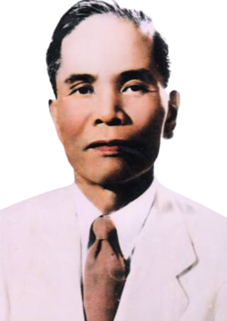
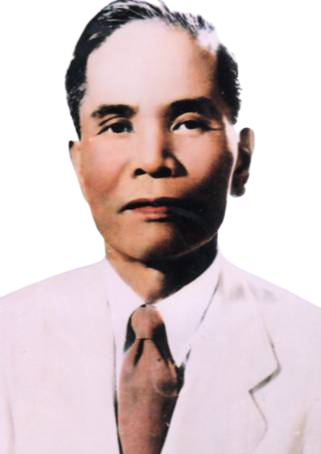
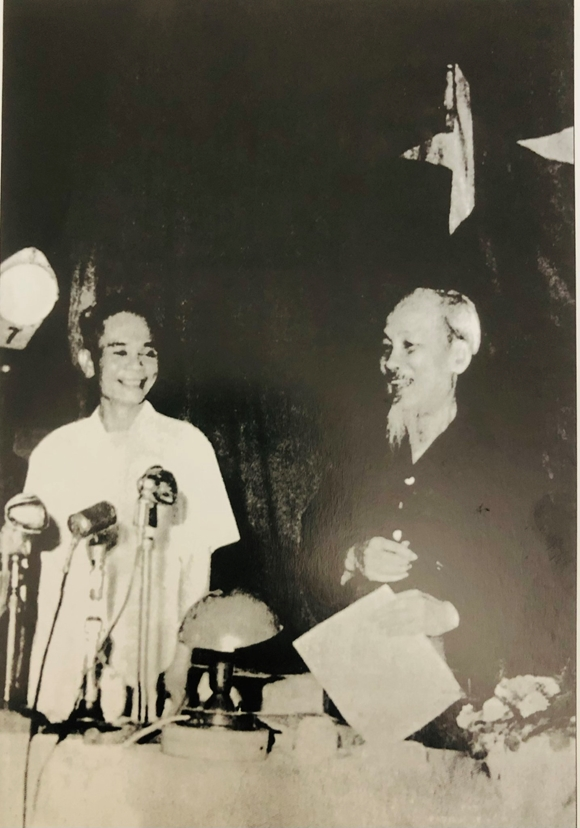
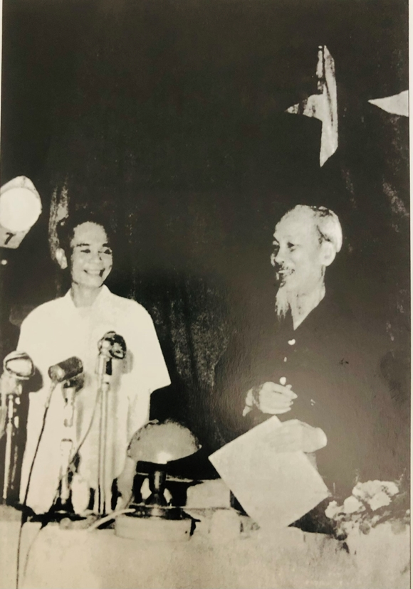

Ông tham gia cách mạng năm 15 tuổi. Từ nhận thức “không có tổ chức như cát rời, vô dụng”, ngay lúc tuổi 16, Trần Hữu Dực đã chủ trì Hội nghị thành lập tổ chức yêu nước “Ái hữu dân đoàn”.
Tập hợp được đông đảo quần chúng nhân dân, “Ái hữu dân đoàn” đã tạo ảnh hưởng tích cực, mở đường cho tổ chức Việt Nam thanh niên cách mạng đồng chí hội xâm nhập lan rộng vào Quảng Trị, đánh dấu bước phát triển mới của phong trào cách mạng của huyện Triệu Phong nói riêng và tỉnh Quảng Trị nói chung.
Tổ chức "Ái hữu dân đoàn"
- 1926 -
Trong thời gian hoạt động cách mạng từ 1926 - 1945, Trần Hữu Dực bị Pháp bắt 4 lần và bị chính quyền Nam triều kết án t
ổng số 29 năm tù giam và 22 năm quản thúc, từng trải qua các
nhà tù khét tiếng tàn độc của đế quốc thực dân như nhà tù Quảng Trị, nhà đày Lao Bảo, nhà đày Buôn Ma Thuột (2 lần).
Tháng 7 năm 1929, ông bị bắt lần thứ nhất và giam ở nhà tù Quảng Trị. Trước các cực hình tra tấn, ông đã nêu tấm gương kiên
cường bất khuất, giành trận thắng đầu tiên của người Cộng sản trước kẻ thù, trong đó có tên trùm mật thám Trung kỳ Xônhi, buộc chúng phải thả ông.
Những lần bị bắt giữ
1926-1945
Đầu năm 1931, ông bị bắt lần thứ hai, bị giam ở nhà lao Quảng Trị cùng với một số đảng viên khác.
Những tên mật thám Tây, mật thám Việt lồng lộn tra tấn ông hơn 4 tuần lễ nhưng chỉ nhận được câu trả lời không biết
, không làm. Kẻ thù đày ông và một số đồng chí khác của ông đi nhà đày Lao Bảo.
Năm 1936, từ Lao Bảo, kẻ địch chuyển ông đến nhà đày Buôn Mê Thuột, một trong những địa ngục khét tiếng của thực dân Pháp xây dựng ở Việt Nam.
Tháng 9 năm 1941, ông bị bắt tại Ninh Thuận. Ông bị kết án 20 năm tù cộng thêm 4 năm do trốn tù và bị đày đi Buôn Mê Thuột lần thứ 2.
Những lần bị bắt giữ
1926-1945
Sinh thời, Trần Hữu Dực được Đảng, Nhà nước giao nhiều trọng trách quan trọng. Ở cương vị nào ông cũng giữ được phẩm chất trong sáng, cần, kiệm, liêm,
chính của một người chiến sĩ cách mạng. Ông luôn rèn luyện, giữ bản chất của mình. Quan điểm của ông là “Hoạn bất tài. Hạ hoạn vô vị” (Nghĩ
a là : Lo bất tài. Không lo địa vị). Suốt cuộc đời hoạt cách mạng khi nào ông cũng tự răn mình “Phải sống sao cho xứng đáng là người cộng
sản. Từ hai chữ cộng sản, đến Đảng Cộng sản, đảng viên Đảng Cộng sản, giai cấp vô sản, Chủ nghĩa Mác-Lê nin, chế độ xã hội chủ nnghĩa và rất nhiều vấ
n đề khác của Cách mạng, tất cả đều quy vào con người cộng sản”.
Con người cộng sản
Giáo sư Vũ Khiêu - Anh hùng lao động, một trong những nhà văn hóa lớn của Việt Nam - đã khái quát đầy đủ phẩm chất của người cộng sản Trần Hữu Dực qua bốn câu đối nhân dịp khánh thành nhà lưu niệm cố Phó Thủ tướng Trần Hữu Dực như sau:
Kiên cường bất khuất, trăm vòng lửa thép vững tâm can
Cần kiệm thanh liêm, một tấm lòng son soi nhiệt nguyệt
Mười lăm tuổi ra đi, sức trẻ tài cao, vào tử ra sinh cùng Tổ quốc
Một trăm năm nhìn lại, gan vàng dạ sắt đồng cam cộng khổ với nhân dân.
Những câu nói hay về ông
Ngày 31/8/1945, ông được bầu vào Thường vụ xứ ủy Trung Kỳ của Đảng và tiếp đó ngày 02/9/1945 trong cuộc họp các đại biểu các tỉnh Trung Kỳ, ông được bầu là Chủ tịch UBND cách mạng Trung bộ với sự tín nhiệm tuyệt đối.
Giữa năm 1948, Trần Hữu Dực được Trung ương Đảng và Chính phủ điều ra Việt Bắc, từ đó ông đảm nhận chức vụ Ủy viên Đảng đoàn Chính phủ, Bí thư đầu tiên của Liên Chi ủy cơ quan Trung ương
Năm 1950, Trần Hữu Dực được Chủ tịch Hồ Chí Minh ký bổ nhiệm giữ chức vụ Phó Chủ nhiệm Tổng cục Cung cấp Quân đội Nhân dân Việt Nam (nay là Tổng cục Hậu cần).
Các chức vụ ông đảm nhiệm
1945 - 1950
Trong hai cuộc kháng chiến chống Pháp và chống Mỹ, ông được Đảng và Nhà Nước giao nhiều trọng trách: Ủy viên BCH TW Đảng từ khóa I đến khóa IV, Bộ trưởng Phủ Thủ tướng, Bí thư Khu ủy Trị Thiên, Phó Thủ tướng Chính Phủ, Viện trưởng Viện Kiểm sát nhân dân tối cao. Ông có tập hồi ký “Bước qua đầu thù” ghi lại tinh thần đấu tranh kiên cường bất khuất của các chiến sĩ cộng sản trong nhà tù đế quốc. Và có câu nói nổi tiếng của ông đc trích từ cuốn hồi kí này: “Của cải như không khí. Cảnh vật như thần tiên. Con người như thánh hiền. Mới xây dựng được lý tưởng cộng sản”
Quá trình chống Pháp, chống Mỹ của ông
1954 - 1975


 

 
